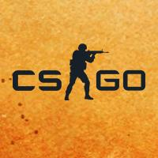

Valorant
Valorant é um jogo eletrônico multijogador gratuito para jogar de tiro em primeira pessoa desenvolvido e
publicado pela Riot Games. É o primeiro jogo do gênero desenvolvido pela empresa,[2] sendo anunciado pela
primeira vez com o codinome Project A em outubro de 2019, em um evento de comemoração de 10 anos de League of
Legends.[3] Foi lançado em 2 de junho de 2020 para Microsoft Windows.
Duas equipes de cinco jogam uma contra a outra, e os jogadores assumem o papel de "agentes" com habilidades
únicas. No modo de jogo principal, a equipe atacante tem uma bomba, chamada Spike, que eles precisam plantar
em um local. Se a equipe atacante proteger com sucesso a bomba e ela detonar, eles ganharão um ponto. Se a
equipe defensora desarmar com sucesso a bomba ou o cronômetro de 100 segundos da rodada expirar, a equipe
defensora receberá um ponto. Eliminar todos os membros da equipe adversária também ganha uma rodada. A
primeira equipe a vencer o melhor de 24 rodadas vence a partida.[2] O jogo também promove um servidor com tick
rate de 128, que garante uma jogabilidade suave e baixo ping com uma expansão global de data centers.

CSGO
Counter-Strike: Global Offensive (CS:GO) é um jogo online desenvolvido pela Valve Corporation e pela Hidden
Path Entertainment, sendo uma sequência de Counter-Strike: Source. É o quarto título principal da franquia.
Foi lançado no dia 21 de agosto de 2012 para as plataformas Windows e Mac OS X no Steam, Xbox 360 (por meio da
Xbox Live Arcade), e uma versão exclusiva para os EUA para PlayStation 3 (por meio da PlayStation Network). A
versão de Linux foi lançada em setembro de 2014 (com suporte para o sistema Ubuntu a partir da versão 12.05).
O jogo conta com conteúdo clássico de tiro, como versões retrabalhadas de mapas clássicos, bem como novos
mapas, personagens e modos de jogo
O sistema multiplayer multi-plataformas foi planejado entre jogadores de Windows, OS X, Linux e PSN, mas
acabou excluindo o PSN por causa das diferenças na frequência de atualização dos sistemas.[3][4] A versão da
PSN oferece três formas de controles, que inclui DualShock 3, PlayStation Move.
De acordo com o portal para o submundo, o Counter-Strike: Global Offensive foi o jogo mais vendido pelo Steam
no Brasil, no ano de 2015. Segundo a matéria, brasileiros compraram mais de 205 mil cópias do jogo da Valve
entre abril e dezembro de 2015. Em segundo lugar ficou Grand Theft Auto V com 190 mil unidades vendidas.
LOL
League of Legends (abreviado como LoL e comumente referido como League) é um jogo eletrônico do gênero
multiplayer online battle arena (MOBA) desenvolvido e publicado pela Riot Games. Foi lançado em outubro de
2009 para Microsoft Windows e em março de 2013 para macOS. Inspirado em Defense of the Ancients (DotA), uma
modificação de Warcraft III, os fundadores da Riot buscaram desenvolver um jogo autônomo do mesmo gênero.
Desde o seu lançamento, o título é gratuito para jogar e monetizado por meio de personalização de personagens,
a qual é obtenível através de uma moeda virtual comprável com dinheiro real.
No jogo, duas equipes de cinco jogadores batalham em um combate jogador contra jogador (PvP), com cada equipe
ocupando e defendendo sua metade do mapa. Cada um dos dez jogadores controla um personagem, conhecido como
"campeão", com habilidades únicas e diferentes estilos de jogo. Durante uma partida, os campeões se tornam
mais poderosos ao coletarem pontos de experiência, ganharem ouro e comprarem itens a fim de derrotar a equipe
adversária. No modo principal, Summoner's Rift, o objetivo primário é avançar até a base inimiga e destruir
uma grande estrutura localizada em seu centro, sob o nome de "Nexus".
Em seu lançamento, League of Legends recebeu várias avaliações positivas dos críticos, que destacaram a
acessibilidade, design de personagens e valor de produção. Sua longa vida útil resultou em uma reavaliação
crítica, também com análises positivas. Por outro lado, o comportamento negativo e abusivo de seus jogadores,
criticado desde o seu lançamento, persiste, apesar das tentativas da Riot de corrigir o problema. Em 2019, o
título atingiu o pico de oito milhões de jogadores simultâneos, com sua popularidade levando a conexões com
outras mídias, tais como vídeos musicais, histórias em quadrinhos, contos e na série de televisão animada
Arcane. Seu sucesso também gerou vários jogos derivados, incluindo uma versão para celular.
League of Legends é frequentemente citado como o maior esporte eletrônico do mundo, com um cenário competitivo
internacional composto por doze ligas. As ligas nacionais culminam no anual Campeonato Mundial de League of
Legends; a final da edição de 2021 teve uma audiência de mais de 73 milhões de telespectadores. Os eventos
nacionais e internacionais são transmitidos em sites de live streaming como a Twitch, YouTube e Bilibili, bem
como em canais de esportes por assinatura ESPN e SporTV.
Dota
Dota é uma série de videogames de estratégia agora desenvolvidos pela Valve. A série começou em 2003 com o
lançamento de Defense of the Ancients (DotA), um mod de arena de batalha online multiplayer (MOBA)
desenvolvido por fãs para o videogame Warcraft III: Reign of Chaos e sua expansão, The Frozen Throne. O mod
original apresenta uma jogabilidade centrada em torno de duas equipes de até cinco jogadores que assumem o
controle de personagens individuais chamados "heróis", que devem se coordenar para destruir a estrutura de
base central do inimigo chamada "Ancient", para vencer o jogo. A propriedade e o desenvolvimento do DotA foram
repassados várias vezes desde seu lançamento inicial até que a Valve contratou o designer-chefe do mod
IceFrog e após uma disputa legal em andamento com a Blizzard Entertainment, o desenvolvedor do Warcraft III,
negociou um acordo que permitiu que a Valve herdasse a marca registrada para o nome Dota.
A primeira parcela independente da série, Dota 2, foi lançada pela Valve em julho de 2013. Uma sequência de
DotA, o jogo mantém os mesmos elementos de jogabilidade de seu antecessor, ao mesmo tempo em que introduz
novos suportes e mecânicas, bem como um cenário separado do Universo Warcraft. Artifact, um jogo de cartas
colecionáveis digitais com mecânica inspirada no Dota 2, foi lançado em 2018. Dota Underlords, um auto
battler baseado no mod Dota 2 criado pela comunidade Dota Auto Chess, foi lançado em 2020.
O mod DotA original é considerado um dos mods mais populares de todos os tempos, com dezenas de milhões de
jogadores e uma presença consistente em torneios de esports ao longo dos anos 2000. DotA é considerado um
catalisador para o gênero MOBA, inspirando desenvolvedores a criarem outros jogos semelhantes a ele. Da mesma
forma, Dota 2 é citado como um dos maiores videogames de todos os tempos, com presença nos esports marcada por
prêmios recordes que culminam no campeonato anual conhecido como The International. Os jogos derivados da
Valve foram recebidos positivamente, embora Artifact tenha sido considerado um fracasso, pois a grande maioria
de sua base inicial de jogadores foi perdida em semanas com a Valve interrompendo o desenvolvimento logo após
seu lançamento.